Contest Award ContestAward コンテスト受賞作品一覧
「審査委員長賞」
{kind=link}
{kind=link}
「門真市長賞」
{kind=link}
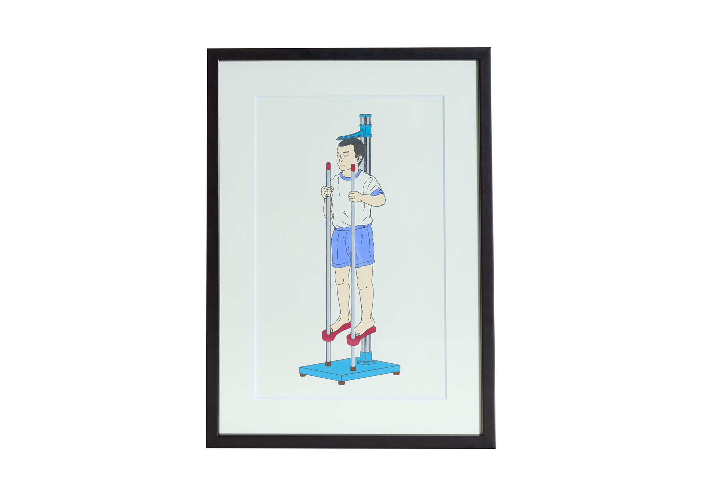
小口智史/背伸びしたいお年頃
「実行委員長賞」
{kind=link}
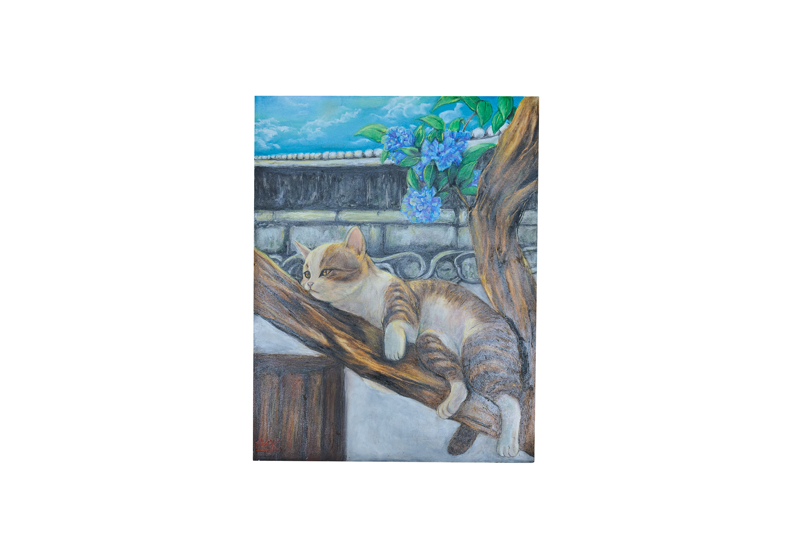
筑紫よう/特等席
「藤岡幸夫賞」
{kind=link}
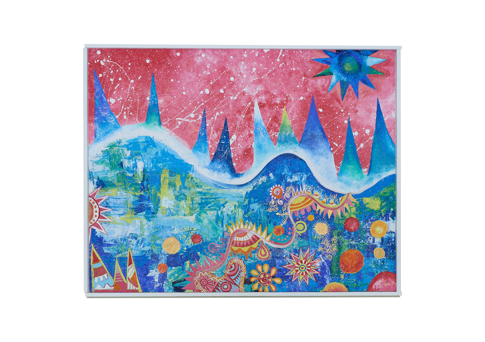
Ruchika/FrozenSunsetー ADeep-SeaParadiseー
「中村工務店賞」
{kind=link}
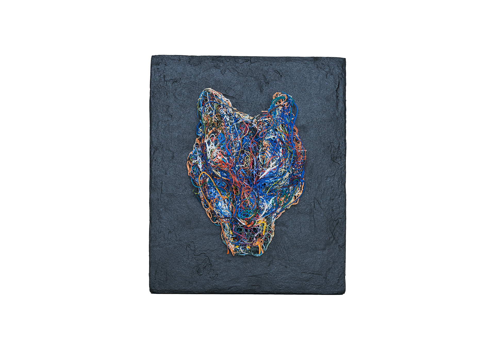
吉川 徹/EmberGaze ―残火の瞳
「タイガー魔法瓶賞」
{kind=link}
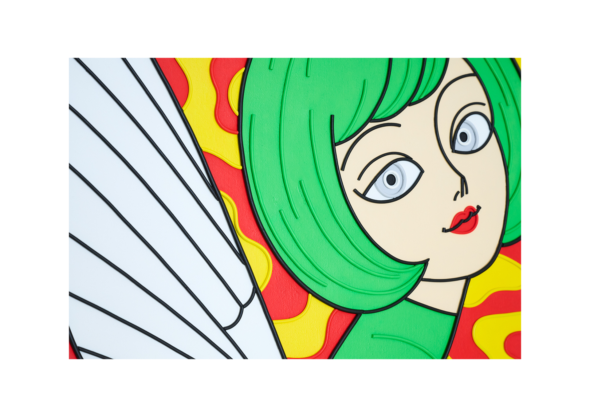
キララ/オオスカシバのシバ
「門真ロータリークラブ賞」
{kind=link}
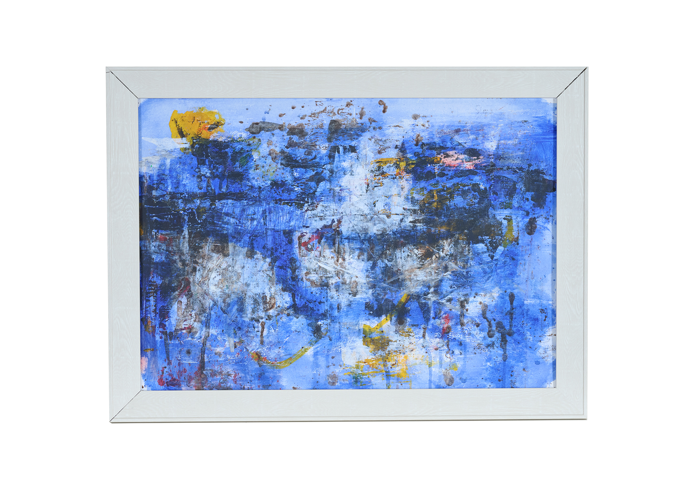
濱中 和義/NON title
「ルミエールホール賞」
{kind=link}
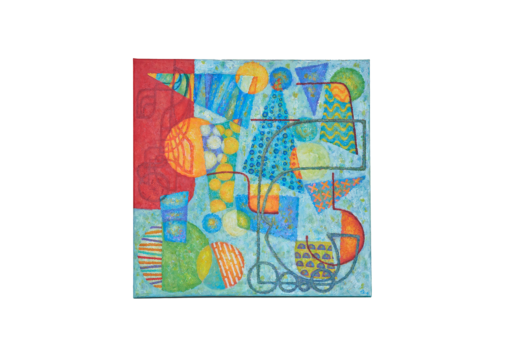
のぐちあやの/片っぽ靴下のマーチ
「KAFアート部会賞」
{kind=link}
{kind=link}
「KAFアート部会賞」
{kind=link}
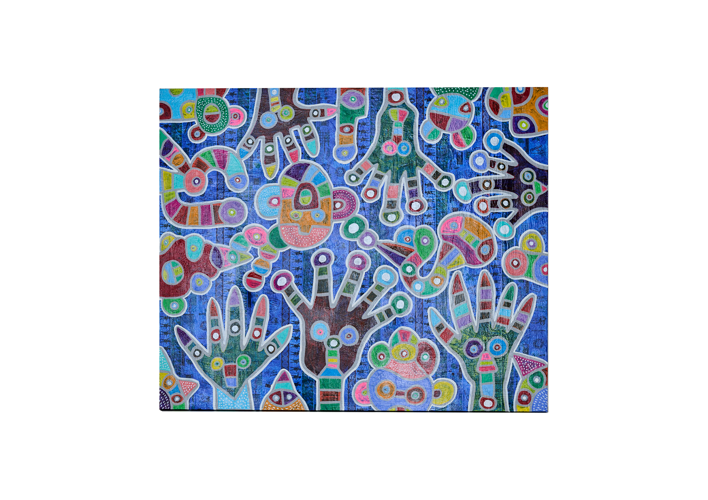
カミジョウミカ/青が抑制した 赤い手ハゲしい
「ウーイェイよしたか賞」
{kind=link}
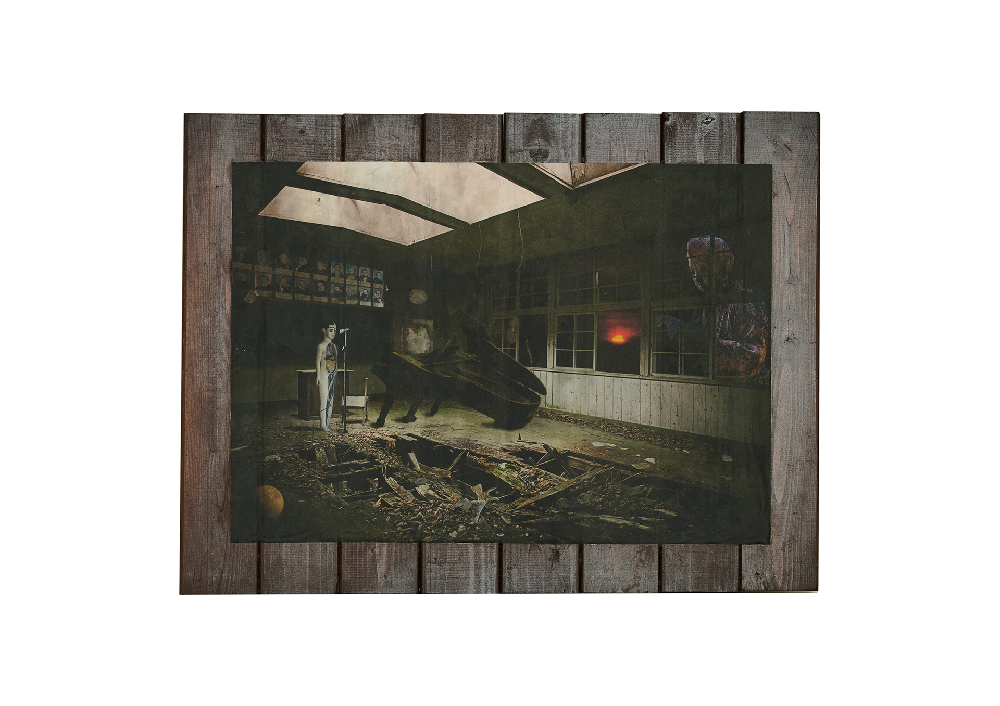
三上健二郎/廃校奇譚
「椿奈々賞」
{kind=link}
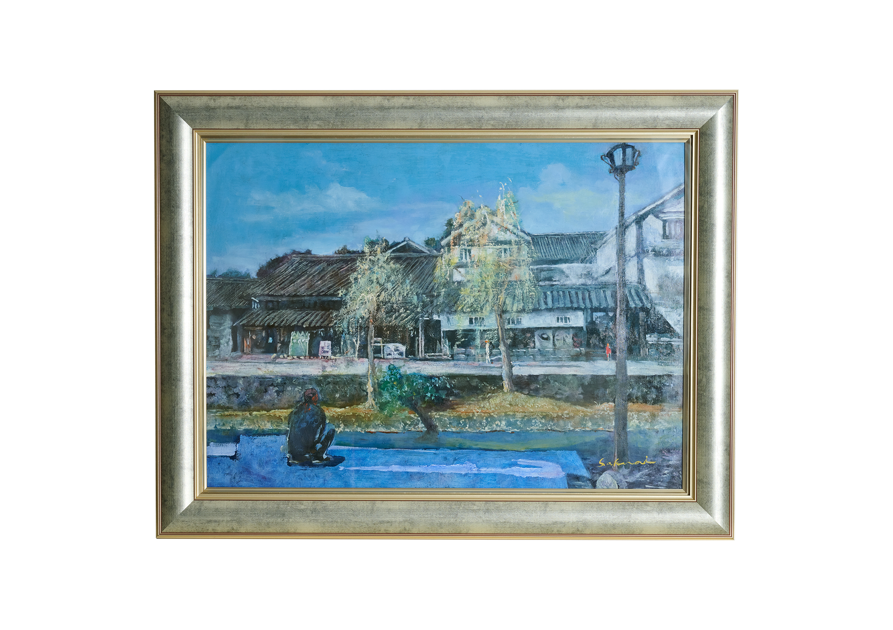
櫻井聖子/日常の風景
審査員メッセージ/プロフィール
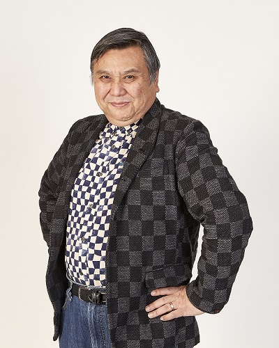
審査委員長 宮脇 修一(みやわき しゅういち)
1957年・大阪府出身
（株）海洋堂 取締役専務兼、日本最大の造形イベント「ワンダーフェスティバル」実行委員長。
海洋堂創設者・宮脇修の実子、通常の役職では計れない海洋堂という組織を体現する存在。
通称“センム”で親しまれている。１９６４年、父・宮脇修が模型小売店として創業した海洋堂の経営に幼少のころから参加。80年代以降は磨き上げられたその“模型審美眼”で造形作家達を統率し、小売り業種からフィギュアメーカーへ転身した海洋堂の立ち上げと牽引に従事。発表したアニメや特撮ヒーローのキャラクター、恐竜等の絶滅生物における精巧で躍動感あふれる造形表現は、国内外から高い評価を受ける。
日本のガレージキット（フィギュア）シーンの誕生と発展における最重要人物の一人。近年では、－日本の動物シリーズ－から始まり、社会現象にまでなった食玩ブームを生みだした。以降も国内外のミュージアム施設や大型展示イベントとのコラボレーションを展開、マニアにとどまらない一般層の支持も集め、様々なジャンルでヒットフィギュアを発明し続ける。著書に「造形集団海洋堂の発想」、「好きなことだけで生き抜く力」がある。
今回はルミエールホールの審査会にて作品を拝見させていただきました。
パッと見た瞬間に「おっ！すごいものが並んでるぞ！」と感じました。
毎回の審査は愉しいものでありますが、「これもいい！これもいい！」というように選定は難しくもあります。
しかし、様々な素晴らしい作品がズラッと並ぶ様はとても面白く、モノづくりの会社をやらせてもらってる私としましても、門真の街でこうして続いていることは大変素晴らしいことであると思います。
絵画や焼き物など幅広い作品が集まる中、私の心に刺さった作品を選ばせていただきました。
門真市長 宮本一孝(みやもと かずたか)
「KADOMA ART FES ５」のご盛会を心よりお慶び申し上げます。
平素より市政の各般、とりわけ文化芸術の振興・推進に多大なるご支援・ご協力を賜り、厚く御礼申し上げます。
KADOMA ART FES５の会場である大和田駅周辺にて、創造性あふれる作品が地元商店街のいたるところに展示されることにより、アートが生活空間に融合し、街に溶け込む姿が門真の新たな魅力と可能性を発信する機会となりました。
門真市文化芸術推進基本計画の実現のため、本市と市民や企業の皆様との協働・共創の場として開催されている本フェスティバルも、今年で５年目となります。個性豊かなアート作品やワークショップ等、様々なアクティビティをこの大和田駅周辺に集結させ、活気あふれるフェスティバルとなっておりますのも、実行委員会並びに関係各位のご尽力の賜物であります。
本フェスティバルを通じて生まれた交流や感動が大きな原動力になり、本市が更に「文化芸術であふれるまち門真」へと発展していくことに大きな期待を寄せております。
結びに、貴実行委員会の今後益々のご発展並びに、皆様のご健康ご活躍をお祈り申し上げまして、お祝いのメッセージといたします。
門真市長 宮本 一孝
今回はルミエールホールの審査会にて作品を拝見させていただきました。
パッと見た瞬間に「おっ！すごいものが並んでるぞ！」と感じました。
毎回の審査は愉しいものでありますが、「これもいい！これもいい！」というように選定は難しくもあります。
しかし、様々な素晴らしい作品がズラッと並ぶ様はとても面白く、モノづくりの会社をやらせてもらってる私としましても、門真の街でこうして続いていることは大変素晴らしいことであると思います。
絵画や焼き物など幅広い作品が集まる中、私の心に刺さった作品を選ばせていただきました。
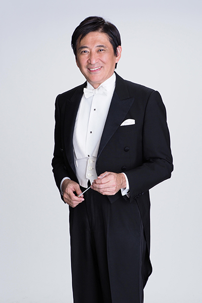
藤岡 幸夫(ふじおか さちお)
藤岡幸夫プロフィール
英国王立ノーザン音大指揮科卒業。サー･チャールズ･グローヴス記念奨学賞を特例で受賞。1994年ロンドン《プロムス》にBBCフィルを指揮してデビュー以降、数多くの海外オーケストラに客演。首席指揮者を務める関西フィルとは2025年が26年目のシーズン、2025年4月から総監督にも就任。2019年からは東京シティ･フィル首席客演指揮者を兼任。指揮･司会として関西フィルと出演中のBSテレ東『エンター･ザ･ミュージック』（毎週土曜朝8:30）は放送11年目。2002年渡邉曉雄音楽基金音楽賞受賞。24年1月より門真市ふるさと大使(愛称：門真情熱大使)。
写真家クレジット ©SHIN YAMAGISHI
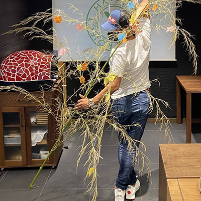
中村工務店
KADOMA ART FES CONTEST KAF5
入賞作品展示
| 名称 | KADOMA ART FES 5 門真のまちをアートで染めよう MACHIKADO MACHINAKA GALLERY |
|---|---|
| 会期期間 | 2026年03月07日 (土) 〜 03月08日 (日) 10:00 〜 16:00 |
| 開催場所 | 大和田駅前広場 / 大和田南商店街 周辺 |
| 入場料 | 無料 |
| お問い合わせ | 〒571-0030大阪府門真市末広町29-1 会館時間9:00〜22:00 火曜休館日 |
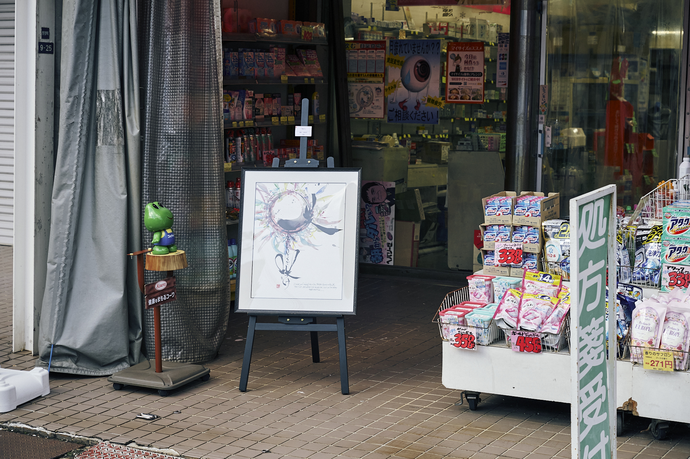
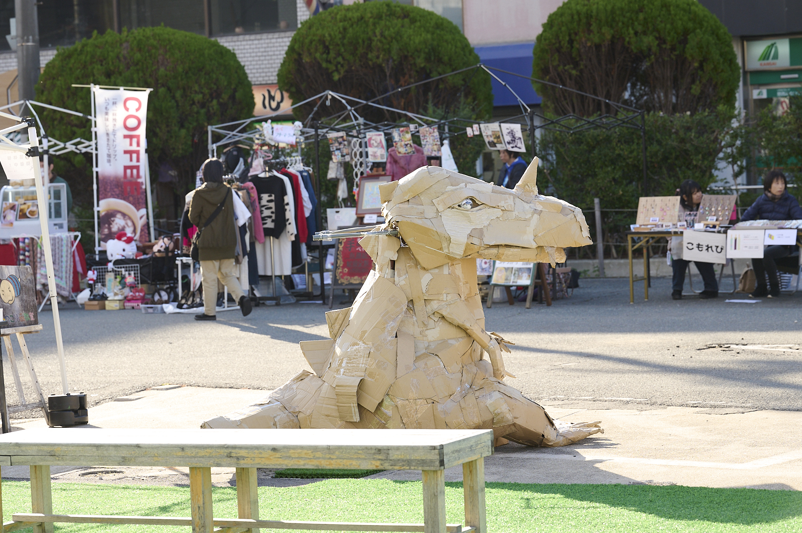
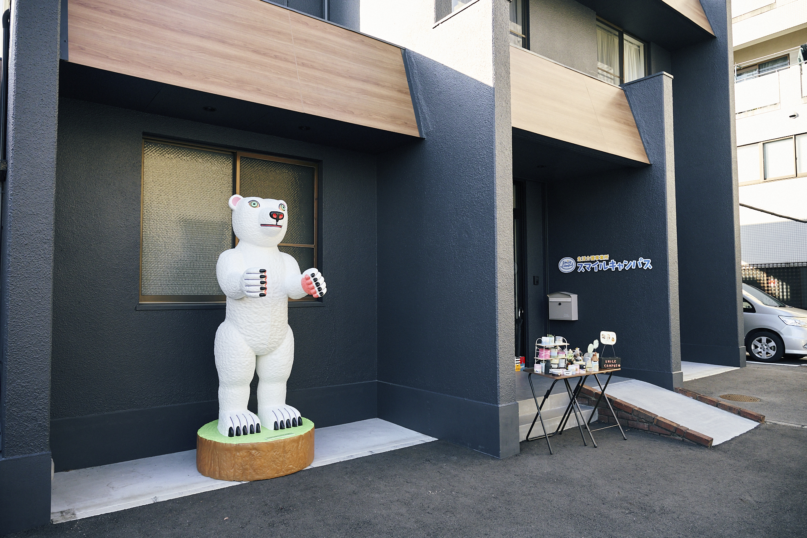
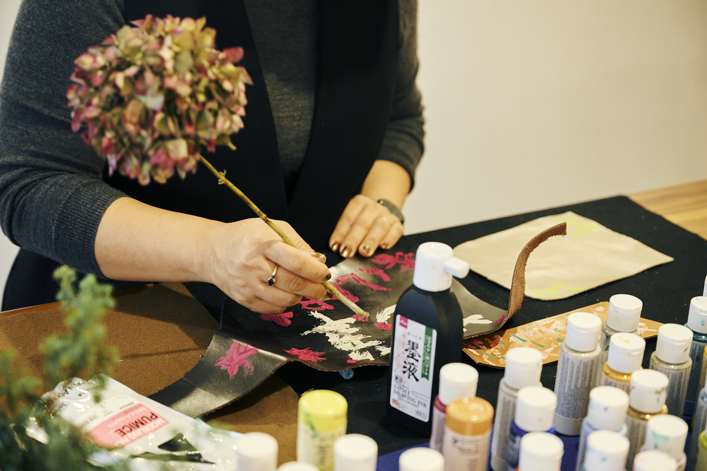
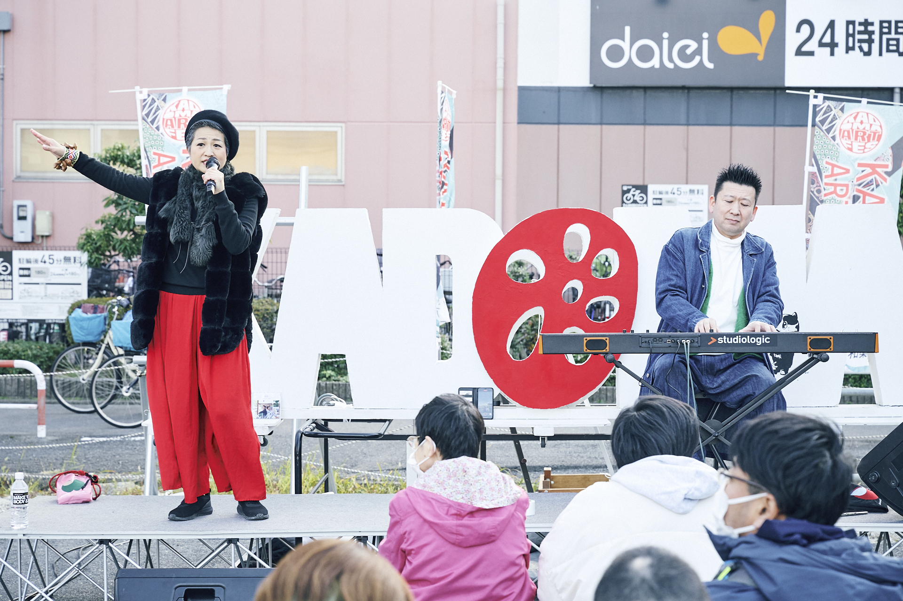
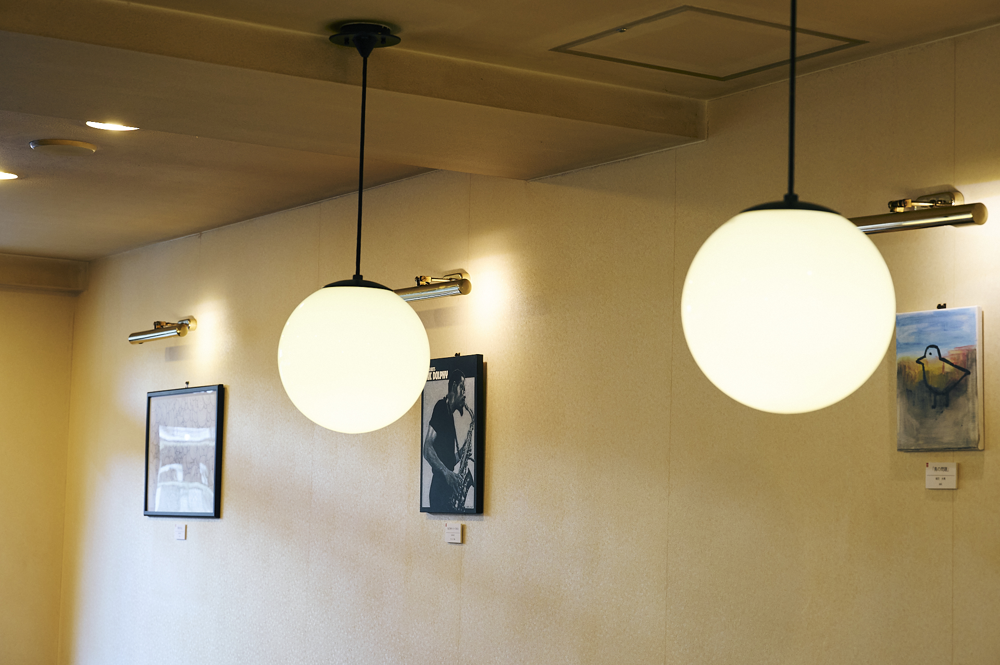
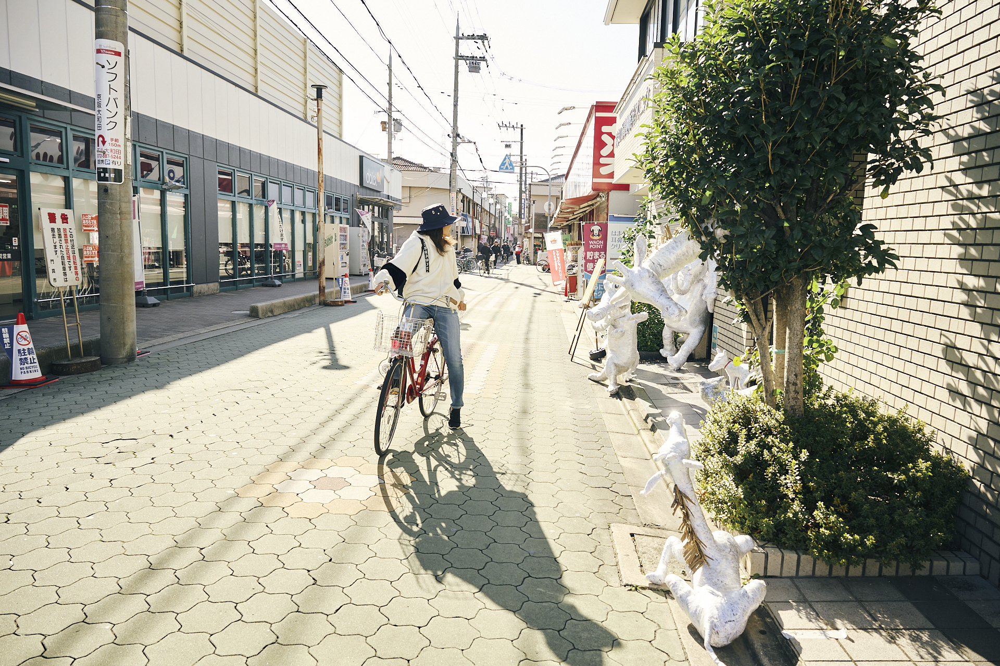
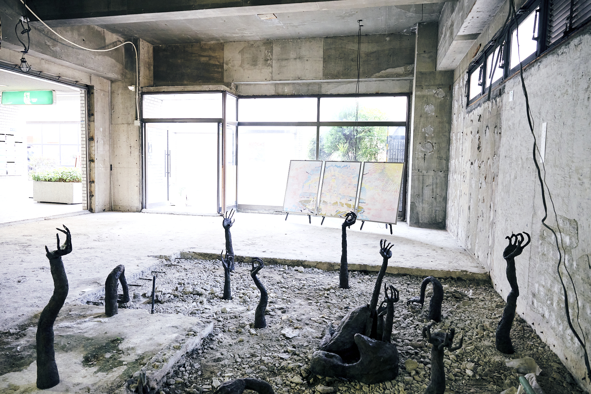